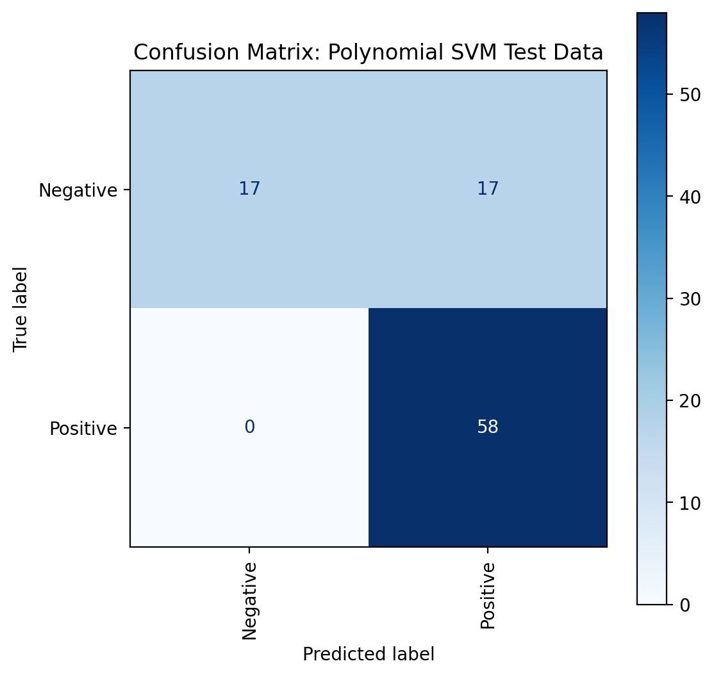
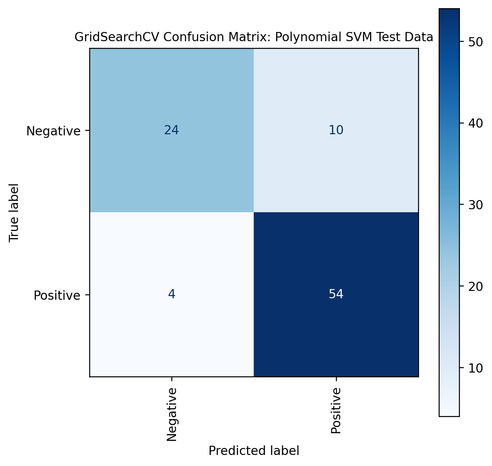
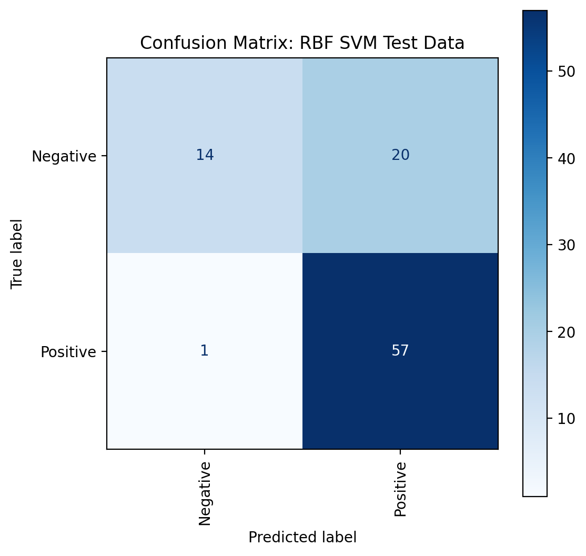
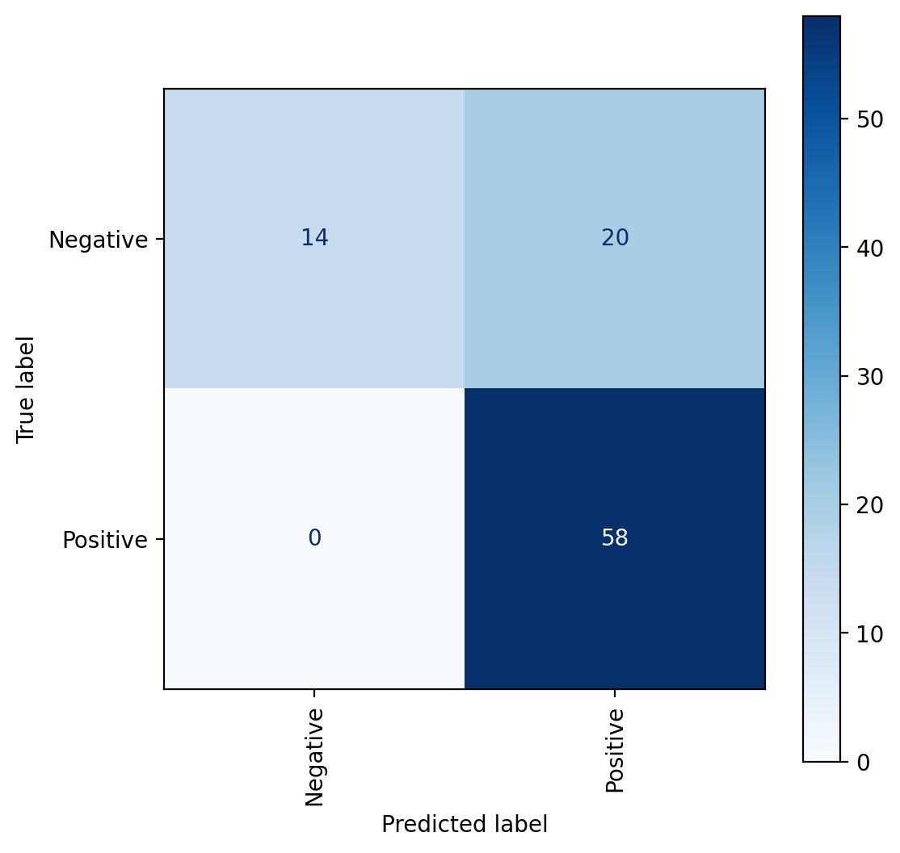
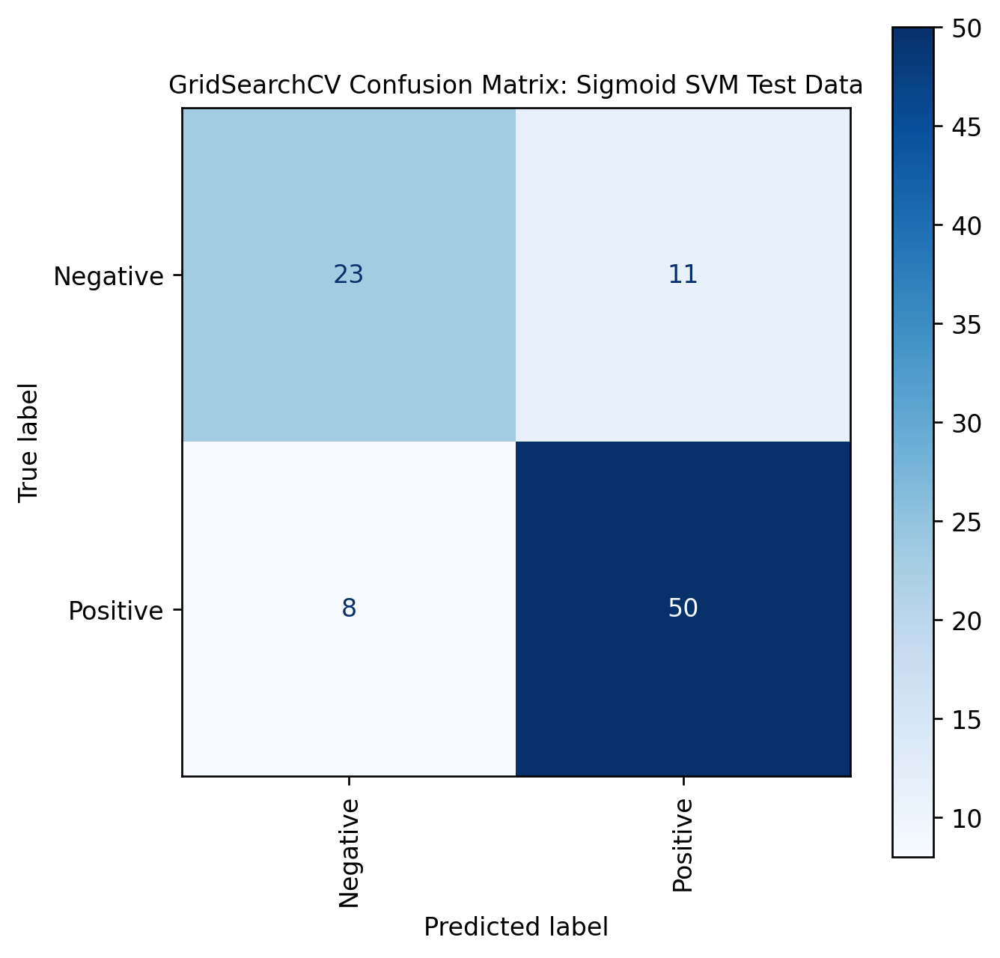

Code
import pandas as pd
import numpy as np
import matplotlib.pyplot as plt
import seaborn as sns
from sklearn.metrics import confusion_matrix, ConfusionMatrixDisplay, classification_report
import warnings
import os
warnings.filterwarnings('always')This page focuses on text data SVM and will look into SVM Classification, attribute selection measures, and how to build and optimize SVM Classifier using python. Support vector machine is another simple algorithm that every machine learning expert should have in their arsenal. Support vector machine is highly preferred by many as it produces significant accuracy with less computation power. Support Vector Machine, abbreviated as SVM can be used for both regression and classification tasks.
Thus, this tab will explore the performance of SVM Kernels on my cleaned text data, which was gathered using the News API. My sentiment analysis on the text data yielded an average sentiment of 0.04, which is neither positive or negative. This means that our data is not imbalanced and can be used for analysis.
A support vector machine (SVM) is a supervised machine learning model that solves two-group classification problems using classification algorithms. They can categorize new text after providing an SVM model with sets of labeled training data for each category. They have two major advantages over newer algorithms, such as neural networks, in terms of speed and performance with a limited number of samples (in the thousands). This makes the algorithm ideal for text classification problems, where access to a dataset of only a few thousands of tagged samples is common.
There are specific types of SVMs you can use for particular machine learning problems, like support vector regression (SVR) which is an extension of support vector classification (SVC). SVMs are different from other classification algorithms because of the way they choose the decision boundary that maximizes the distance from the nearest data points of all the classes. The decision boundary created by SVMs is called the maximum margin classifier or the maximum margin hyper plane. A simple linear SVM classifier works by making a straight line between two classes. That means all of the data points on one side of the line will represent a category and the data points on the other side of the line will be put into a different category. This means there can be an infinite number of lines to choose from. What makes the linear SVM algorithm better than some of the other algorithms, like k-nearest neighbors, is that it chooses the best line to classify your data points. It chooses the line that separates the data and is the furthest away from the closet data points as possible.
Types of SVM Kernels:
Linear: These are commonly recommended for text classification because most of these types of classification problems are linearly separable.
Polynomial: The polynomial kernel isn’t used in practice very often because it isn’t as computationally efficient as other kernels and its predictions aren’t as accurate.
Gaussian Radial Basis Function (RBF): One of the most powerful and commonly used kernels in SVMs. Usually the choice for non-linear data.
The first step of our SVM modelling is to test our data on a random classifier, which is a baseline model. The random classifier will output precision, accuracy, and recall values.
import pandas as pd
import numpy as np
import matplotlib.pyplot as plt
import seaborn as sns
from sklearn.metrics import confusion_matrix, ConfusionMatrixDisplay, classification_report
import warnings
import os
warnings.filterwarnings('always')news_clean = pd.read_csv("../../data/clean-data/news_clean.csv")news_clean| Unnamed: 0 | Content_Lemmatized_Sentiment_Analysis | sentiment_rating | label | |
|---|---|---|---|---|
| 0 | 0 | riyadh oct reuters global recession avoided go... | -0.8225 | Negative |
| 1 | 1 | melbourne sept reuters oil price dipped early ... | -0.6249 | Negative |
| 2 | 2 | posted bank england raised key interest rate t... | 0.4588 | Positive |
| 3 | 3 | washington sept reuters downside risk continue... | -0.7506 | Negative |
| 4 | 4 | london sept reuters sterling surrendered gain ... | 0.7506 | Positive |
| ... | ... | ... | ... | ... |
| 451 | 451 | though briefly dipped early august average yea... | 0.2732 | Positive |
| 452 | 452 | u treasury secretary janet yellen said hopeful... | 0.9337 | Positive |
| 453 | 453 | likely u inflation start cool soon imbalance l... | 0.7430 | Positive |
| 454 | 454 | china yuan weakened lowest level since july th... | -0.3182 | Negative |
| 455 | 455 | insider expert choose best product service hel... | 0.8625 | Positive |
456 rows × 4 columns
news_clean.drop(['Unnamed: 0'], axis = 1, inplace = True) # drop unneeded columnnews_clean| Content_Lemmatized_Sentiment_Analysis | sentiment_rating | label | |
|---|---|---|---|
| 0 | riyadh oct reuters global recession avoided go... | -0.8225 | Negative |
| 1 | melbourne sept reuters oil price dipped early ... | -0.6249 | Negative |
| 2 | posted bank england raised key interest rate t... | 0.4588 | Positive |
| 3 | washington sept reuters downside risk continue... | -0.7506 | Negative |
| 4 | london sept reuters sterling surrendered gain ... | 0.7506 | Positive |
| ... | ... | ... | ... |
| 451 | though briefly dipped early august average yea... | 0.2732 | Positive |
| 452 | u treasury secretary janet yellen said hopeful... | 0.9337 | Positive |
| 453 | likely u inflation start cool soon imbalance l... | 0.7430 | Positive |
| 454 | china yuan weakened lowest level since july th... | -0.3182 | Negative |
| 455 | insider expert choose best product service hel... | 0.8625 | Positive |
456 rows × 3 columns
print("The mean sentiment is ", news_clean['sentiment_rating'].mean())
print("The data shape is ", news_clean.shape)The mean sentiment is 0.036431359649122745
The data shape is (456, 3)Our dependent variable is the sentiment score, and the independent variable is the words from the cleaned news dataframe.
from sklearn.model_selection import train_test_split
from sklearn.feature_extraction.text import CountVectorizer
np.random.seed(3737)
X = news_clean["Content_Lemmatized_Sentiment_Analysis"]
y = news_clean["label"]
x_train, x_test, y_train, y_test = train_test_split(X, y,
random_state = 1,test_size=0.2
)
count_vector = CountVectorizer()
training_data = count_vector.fit_transform(x_train)
testing_data = count_vector.transform(x_test)print("Shape of x_train is: ", x_train.shape)
print("Shape of x_test is: ",x_test.shape)
print("Shape of y_train is: ",y_train.shape)
print("Shape of y_test is: ",y_test.shape)
print("The levels of the dependent variable (Sentiment) are:")
print(y.value_counts())Shape of x_train is: (364,)
Shape of x_test is: (92,)
Shape of y_train is: (364,)
Shape of y_test is: (92,)
The levels of the dependent variable (Sentiment) are:
Positive 274
Negative 182
Name: label, dtype: int64import numpy as np
import random
from collections import Counter
from sklearn.metrics import accuracy_score
from sklearn.metrics import precision_recall_fscore_supportdef random_classifier(y_data):
ypred=[]
max_label=np.max(y_data); #print(max_label)
for i in range(0,len(y_data)):
ypred.append(int(np.floor((max_label+1)*np.random.uniform(0,1))))
print("\n\n-----RANDOM CLASSIFIER-----")
print("count of prediction:",Counter(ypred).values())
print("probability of prediction:",np.fromiter(Counter(ypred).values(), dtype=float)/len(y_data))
print("accuracy",accuracy_score(y_data, ypred))
print("precision, recall, fscore, support",precision_recall_fscore_support(y_data, ypred))from sklearn import preprocessing
# label_encoder object knows how to understand word labels.
label_encoder = preprocessing.LabelEncoder()
# Encode labels in column 'species'.
y_encoded = label_encoder.fit_transform(y)
print("\nBINARY CLASS: NON-UNIFORM LOAD (Positive: 175 count, Negative: 205 count")
print("Unique labels and respective counts after one-hot encoding: ")
print("0 = Negative and 1 = Positive")
unique, counts = np.unique(y_encoded, return_counts=True)
print(np.asarray((unique, counts)).T)
random_classifier(y_encoded)
BINARY CLASS: NON-UNIFORM LOAD (Positive: 175 count, Negative: 205 count
Unique labels and respective counts after one-hot encoding:
0 = Negative and 1 = Positive
[[ 0 182]
[ 1 274]]
-----RANDOM CLASSIFIER-----
count of prediction: dict_values([243, 213])
probability of prediction: [0.53289474 0.46710526]
accuracy 0.5109649122807017
precision, recall, fscore, support (array([0.41563786, 0.61971831]), array([0.55494505, 0.48175182]), array([0.47529412, 0.54209446]), array([182, 274]))Here, we see that the baseline classifier yields an accuracy of 51% and an f-1 score of 0.475 for positive values and 0.542 for negative values. Now, we explore the SVM linear kernel.
from sklearn.svm import SVC
clf = SVC(C=0.45, kernel='linear')
clf.fit(training_data, y_train)
yp_train = clf.predict(training_data)
yp_test = clf.predict(testing_data)cm_train = confusion_matrix(y_train, yp_train, labels=clf.classes_) # calculate confusion matrix
cm_test = confusion_matrix(y_test, yp_test, labels=clf.classes_)
target_names = ['Positive', 'Negative']
clf_report_train_linear = classification_report(y_train, yp_train, target_names=target_names, output_dict=True)
clf_report_test_linear = classification_report(y_test, yp_test, target_names=target_names, output_dict=True)clf_report_train_linear = pd.DataFrame(clf_report_train_linear).transpose()
clf_report_test_linear = pd.DataFrame(clf_report_test_linear).transpose()print("Classification Report of Linear SVM Train Data:")
clf_report_train_linearClassification Report of Linear SVM Train Data:| precision | recall | f1-score | support | |
|---|---|---|---|---|
| Positive | 1.0 | 1.0 | 1.0 | 148.0 |
| Negative | 1.0 | 1.0 | 1.0 | 216.0 |
| accuracy | 1.0 | 1.0 | 1.0 | 1.0 |
| macro avg | 1.0 | 1.0 | 1.0 | 364.0 |
| weighted avg | 1.0 | 1.0 | 1.0 | 364.0 |
print("Classification Report of Linear SVM Test Data:")
clf_report_test_linearClassification Report of Linear SVM Test Data:| precision | recall | f1-score | support | |
|---|---|---|---|---|
| Positive | 0.750000 | 0.705882 | 0.727273 | 34.000000 |
| Negative | 0.833333 | 0.862069 | 0.847458 | 58.000000 |
| accuracy | 0.804348 | 0.804348 | 0.804348 | 0.804348 |
| macro avg | 0.791667 | 0.783976 | 0.787365 | 92.000000 |
| weighted avg | 0.802536 | 0.804348 | 0.803041 | 92.000000 |
# Display Confusion Matrix for the test data
fig, ax = plt.subplots(figsize=(6,6), dpi=120)
disp = ConfusionMatrixDisplay(confusion_matrix=cm_test, display_labels=clf.classes_)
disp.plot(ax=ax, cmap=plt.cm.Blues, values_format='d', xticks_rotation='vertical')
plt.title("Confusion Matrix: Linear SVM Test Data")Text(0.5, 1.0, 'Confusion Matrix: Linear SVM Test Data')from sklearn.svm import SVC
from sklearn.model_selection import GridSearchCV
# defining parameter range
param_grid = {'C': [0.1, 0.3, 0.7, 1, 5, 10],
'kernel': ['linear']}
grid = GridSearchCV(SVC(), param_grid, refit = True, verbose = -1)
grid.fit(training_data, y_train)
# print best parameter after tuning
print("The best parameters after tuning are: ", grid.best_params_)
# print how our model looks after hyper-parameter tuning
print("The best model after tuning looks like: ",grid.best_estimator_)
grid_predictions = grid.predict(testing_data)
# print classification report
print(classification_report(y_test, grid_predictions))The best parameters after tuning are: {'C': 0.3, 'kernel': 'linear'}
The best model after tuning looks like: SVC(C=0.3, kernel='linear')
precision recall f1-score support
Negative 0.75 0.71 0.73 34
Positive 0.83 0.86 0.85 58
accuracy 0.80 92
macro avg 0.79 0.78 0.79 92
weighted avg 0.80 0.80 0.80 92
# Display Confusion Matrix for the above hyperparameter model.
cm_test = confusion_matrix(y_test, grid_predictions, labels=grid.classes_)
fig, ax = plt.subplots(figsize=(6,6), dpi=120)
disp = ConfusionMatrixDisplay(confusion_matrix=cm_test, display_labels=clf.classes_)
disp.plot(ax=ax, cmap=plt.cm.Blues, values_format='d', xticks_rotation='vertical')
title_font = {'size':'10'}
plt.title("GridSearchCV Confusion Matrix: Linear SVM Test Data", **title_font)Text(0.5, 1.0, 'GridSearchCV Confusion Matrix: Linear SVM Test Data')After performing hyperparameter tuning, we see that the performance of the SVM Linear Kernel remains unchanged. This shows that we had initially chosen the best model before performing hyperparameter turning. Let’s check if the Polynomial Kernel yields a better result
# Fit the classfier on the training data and predict on the test data. Set the classifier to be polynomial.
clf = SVC(C=0.45, kernel = 'poly', degree=2)
clf.fit(training_data, y_train)
yp_train = clf.predict(training_data)
yp_test = clf.predict(testing_data)# Calculate the confusion matrix and classification report for the train and test data.
cm_train = confusion_matrix(y_train, yp_train, labels=clf.classes_)
cm_test = confusion_matrix(y_test, yp_test, labels=clf.classes_)
clf_report_train_poly = classification_report(y_train, yp_train, target_names=target_names, output_dict=True)
clf_report_test_poly = classification_report(y_test, yp_test, target_names=target_names, output_dict=True)# Save the results in a data frame.
clf_report_train_poly = pd.DataFrame(clf_report_train_poly).transpose()
clf_report_test_poly = pd.DataFrame(clf_report_test_poly).transpose()print("Classification Report of Polynomial SVM Train Data:")
clf_report_train_polyClassification Report of Polynomial SVM Train Data:| precision | recall | f1-score | support | |
|---|---|---|---|---|
| Positive | 1.000000 | 0.885135 | 0.939068 | 148.000000 |
| Negative | 0.927039 | 1.000000 | 0.962138 | 216.000000 |
| accuracy | 0.953297 | 0.953297 | 0.953297 | 0.953297 |
| macro avg | 0.963519 | 0.942568 | 0.950603 | 364.000000 |
| weighted avg | 0.956704 | 0.953297 | 0.952758 | 364.000000 |
print("Classification Report of Polynomial SVM Test Data:")
clf_report_test_polyClassification Report of Polynomial SVM Test Data:| precision | recall | f1-score | support | |
|---|---|---|---|---|
| Positive | 1.000000 | 0.500000 | 0.666667 | 34.000000 |
| Negative | 0.773333 | 1.000000 | 0.872180 | 58.000000 |
| accuracy | 0.815217 | 0.815217 | 0.815217 | 0.815217 |
| macro avg | 0.886667 | 0.750000 | 0.769424 | 92.000000 |
| weighted avg | 0.857101 | 0.815217 | 0.796230 | 92.000000 |
# Display Confusion Matrix for the test data. Remember to use the ConfusionMatrixDisplay function.
fig, ax = plt.subplots(figsize=(6,6), dpi=100)
disp = ConfusionMatrixDisplay(confusion_matrix=cm_test, display_labels=clf.classes_)
disp.plot(ax=ax, cmap=plt.cm.Blues, values_format='d', xticks_rotation='vertical')
plt.title("Confusion Matrix: Polynomial SVM Test Data")Text(0.5, 1.0, 'Confusion Matrix: Polynomial SVM Test Data')
# defining parameter range
param_grid = {'C': [0.1, 0.5, 1, 5],
'gamma': [1, 0.1, 0.01, 0.001],
'kernel': ['poly']}
grid = GridSearchCV(SVC(), param_grid, refit = True, verbose = -1)
grid.fit(training_data, y_train)
# print best parameter after tuning
print("The best parameters after tuning are: ", grid.best_params_)
# print how our model looks after hyper-parameter tuning
print("The best model after tuning looks like: ",grid.best_estimator_)
grid_predictions = grid.predict(testing_data)
# print classification report
print(classification_report(y_test, grid_predictions))The best parameters after tuning are: {'C': 0.1, 'gamma': 1, 'kernel': 'poly'}
The best model after tuning looks like: SVC(C=0.1, gamma=1, kernel='poly')
precision recall f1-score support
Negative 0.86 0.71 0.77 34
Positive 0.84 0.93 0.89 58
accuracy 0.85 92
macro avg 0.85 0.82 0.83 92
weighted avg 0.85 0.85 0.84 92
# Display Confusion Matrix for the above hyperparameter model.
cm_test = confusion_matrix(y_test, grid_predictions, labels=grid.classes_)
fig, ax = plt.subplots(figsize=(6,6), dpi=120)
disp = ConfusionMatrixDisplay(confusion_matrix=cm_test, display_labels=clf.classes_)
disp.plot(ax=ax, cmap=plt.cm.Blues, values_format='d', xticks_rotation='vertical')
title_font = {'size':'10'}
plt.title("GridSearchCV Confusion Matrix: Polynomial SVM Test Data", **title_font)Text(0.5, 1.0, 'GridSearchCV Confusion Matrix: Polynomial SVM Test Data')
Therefore, after performing hyperparameter tuning, the performance of the Polynomial SVM model remains same. This means that we had initially selected the best model before performing hyperparameter tuning for Polynomial SVM. Even after setting different gamma values and regularization parameters, the initial model is as good as the hyperparameterized model. Moreover, the weighted overall accuracy is significantly greater (81% vs 51%) than that of the Linear SVM models!
# Fit the classfier on the training data and predict on the test data. Set the classifier to be linear and C between 0.35-0.75.
clf = SVC(C=0.45, kernel = 'rbf')
clf.fit(training_data, y_train)
yp_train = clf.predict(training_data)
yp_test = clf.predict(testing_data)# Calculate the confusion matrix and classification report for the train and test data.
cm_train = confusion_matrix(y_train, yp_train, labels=clf.classes_)
cm_test = confusion_matrix(y_test, yp_test, labels=clf.classes_)
clf_report_train_RBF = classification_report(y_train, yp_train, target_names=target_names, output_dict=True)
clf_report_test_RBF = classification_report(y_test, yp_test, target_names=target_names, output_dict=True)# Save the results in a data frame.
clf_report_train_RBF = pd.DataFrame(clf_report_train_RBF).transpose()
clf_report_test_RBF = pd.DataFrame(clf_report_test_RBF).transpose()print("Classification Report of RBF SVM Train Data:")
clf_report_train_RBFClassification Report of RBF SVM Train Data:| precision | recall | f1-score | support | |
|---|---|---|---|---|
| Positive | 1.000000 | 0.736486 | 0.848249 | 148.000000 |
| Negative | 0.847059 | 1.000000 | 0.917197 | 216.000000 |
| accuracy | 0.892857 | 0.892857 | 0.892857 | 0.892857 |
| macro avg | 0.923529 | 0.868243 | 0.882723 | 364.000000 |
| weighted avg | 0.909244 | 0.892857 | 0.889163 | 364.000000 |
print("Classification Report of RBF SVM Test Data:")
clf_report_test_RBFClassification Report of RBF SVM Test Data:| precision | recall | f1-score | support | |
|---|---|---|---|---|
| Positive | 0.933333 | 0.411765 | 0.571429 | 34.000000 |
| Negative | 0.740260 | 0.982759 | 0.844444 | 58.000000 |
| accuracy | 0.771739 | 0.771739 | 0.771739 | 0.771739 |
| macro avg | 0.836797 | 0.697262 | 0.707937 | 92.000000 |
| weighted avg | 0.811613 | 0.771739 | 0.743547 | 92.000000 |
# Display Confusion Matrix for the test data. Remember to use the ConfusionMatrixDisplay function.
fig, ax = plt.subplots(figsize=(6,6), dpi=100)
disp = ConfusionMatrixDisplay(confusion_matrix=cm_test, display_labels=clf.classes_)
disp.plot(ax=ax, cmap=plt.cm.Blues, values_format='d', xticks_rotation='vertical')
plt.title("Confusion Matrix: RBF SVM Test Data")Text(0.5, 1.0, 'Confusion Matrix: RBF SVM Test Data')
# defining parameter range
param_grid = {'C': [0.1, 1, 10, 100, 1000],
'gamma': [1, 0.1, 0.01, 0.001, 0.0001],
'kernel': ['rbf']}
grid = GridSearchCV(SVC(), param_grid, refit = True, verbose = -1)
grid.fit(training_data, y_train)
# print best parameter after tuning
print("The best parameters after tuning are: ", grid.best_params_)
# print how our model looks after hyper-parameter tuning
print("The best model after tuning looks like: ",grid.best_estimator_)
grid_predictions = grid.predict(testing_data)
# print classification report
print(classification_report(y_test, grid_predictions))The best parameters after tuning are: {'C': 10, 'gamma': 0.01, 'kernel': 'rbf'}
The best model after tuning looks like: SVC(C=10, gamma=0.01)
precision recall f1-score support
Negative 0.77 0.71 0.74 34
Positive 0.84 0.88 0.86 58
accuracy 0.82 92
macro avg 0.81 0.79 0.80 92
weighted avg 0.81 0.82 0.81 92
# Display Confusion Matrix for the above hyperparameter model.
cm_test = confusion_matrix(y_test, grid_predictions, labels=grid.classes_)
fig, ax = plt.subplots(figsize=(6,6), dpi=120)
disp = ConfusionMatrixDisplay(confusion_matrix=cm_test, display_labels=clf.classes_)
disp.plot(ax=ax, cmap=plt.cm.Blues, values_format='d', xticks_rotation='vertical')
title_font = {'size':'10'}
plt.title("GridSearchCV Confusion Matrix: RBF SVM Test Data", **title_font)Text(0.5, 1.0, 'GridSearchCV Confusion Matrix: RBF SVM Test Data')Therefore, after performing hyperparameter tuning, the performance of the RBF SVM model increased from 77% to 82%. This means that our initially selected model had scope for improvement in terms of weighted accuracy and f-1 score. Thus, the RBF SVM is the best-performing kernel and we have reinforced it through the above analysis. Now, let’s see if we can at least match or beat RBF SVM’s performance using a Sigmoid SVM kernel.
# Import svc from sklearn.svm and classsification_report, confusion_matrix from sklearn.metrics.
# Fit the classfier on the training data and predict on the test data. Set the classifier to be linear and C between 0.35-0.75.
clf = SVC(C=0.45, kernel = 'sigmoid')
clf.fit(training_data, y_train)
yp_train = clf.predict(training_data)
yp_test = clf.predict(testing_data)# Calculate the confusion matrix and classification report for the train and test data.
cm_train = confusion_matrix(y_train, yp_train, labels=clf.classes_)
cm_test = confusion_matrix(y_test, yp_test, labels=clf.classes_)
clf_report_train_sigmoid = classification_report(y_train, yp_train, target_names=target_names, output_dict=True)
clf_report_test_sigmoid = classification_report(y_test, yp_test, target_names=target_names, output_dict=True)# Save the results in a data frame.
clf_report_train_sigmoid = pd.DataFrame(clf_report_train_sigmoid).transpose()
clf_report_test_sigmoid = pd.DataFrame(clf_report_test_sigmoid).transpose()print("Classification Report of Sigmoid SVM Train Data:")
clf_report_train_sigmoid Classification Report of Sigmoid SVM Train Data:| precision | recall | f1-score | support | |
|---|---|---|---|---|
| Positive | 0.936842 | 0.601351 | 0.732510 | 148.000000 |
| Negative | 0.780669 | 0.972222 | 0.865979 | 216.000000 |
| accuracy | 0.821429 | 0.821429 | 0.821429 | 0.821429 |
| macro avg | 0.858756 | 0.786787 | 0.799245 | 364.000000 |
| weighted avg | 0.844168 | 0.821429 | 0.811712 | 364.000000 |
print("Classification Report of Sigmoid SVM Test Data:")
clf_report_test_sigmoid Classification Report of Sigmoid SVM Test Data:| precision | recall | f1-score | support | |
|---|---|---|---|---|
| Positive | 1.000000 | 0.411765 | 0.583333 | 34.000000 |
| Negative | 0.743590 | 1.000000 | 0.852941 | 58.000000 |
| accuracy | 0.782609 | 0.782609 | 0.782609 | 0.782609 |
| macro avg | 0.871795 | 0.705882 | 0.718137 | 92.000000 |
| weighted avg | 0.838350 | 0.782609 | 0.753303 | 92.000000 |
# Display Confusion Matrix for the test data. Remember to use the ConfusionMatrixDisplay function.
fig, ax = plt.subplots(figsize=(6,6), dpi=100)
disp = ConfusionMatrixDisplay(confusion_matrix=cm_test, display_labels=clf.classes_)
disp.plot(ax=ax, cmap=plt.cm.Blues, values_format='d', xticks_rotation='vertical')<sklearn.metrics._plot.confusion_matrix.ConfusionMatrixDisplay at 0x7fe2434d0d00>
# defining parameter range
param_grid = {'C': [0.1, 1, 10, 100, 1000],
'gamma': [1, 0.1, 0.01, 0.001, 0.0001],
'kernel': ['sigmoid']}
grid = GridSearchCV(SVC(), param_grid, refit = True, verbose = -1)
grid.fit(training_data, y_train)
# print best parameter after tuning
print("The best parameters after tuning are: ", grid.best_params_)
# print how our model looks after hyper-parameter tuning
print("The best model after tuning looks like: ",grid.best_estimator_)
grid_predictions = grid.predict(testing_data)
# print classification report
print(classification_report(y_test, grid_predictions))The best parameters after tuning are: {'C': 100, 'gamma': 0.01, 'kernel': 'sigmoid'}
The best model after tuning looks like: SVC(C=100, gamma=0.01, kernel='sigmoid')
precision recall f1-score support
Negative 0.74 0.68 0.71 34
Positive 0.82 0.86 0.84 58
accuracy 0.79 92
macro avg 0.78 0.77 0.77 92
weighted avg 0.79 0.79 0.79 92
# Display Confusion Matrix for the above hyperparameter model.
cm_test = confusion_matrix(y_test, grid_predictions, labels=grid.classes_)
fig, ax = plt.subplots(figsize=(6,6), dpi=120)
disp = ConfusionMatrixDisplay(confusion_matrix=cm_test, display_labels=clf.classes_)
disp.plot(ax=ax, cmap=plt.cm.Blues, values_format='d', xticks_rotation='vertical')
title_font = {'size':'10'}
plt.title("GridSearchCV Confusion Matrix: Sigmoid SVM Test Data", **title_font)Text(0.5, 1.0, 'GridSearchCV Confusion Matrix: Sigmoid SVM Test Data')
Therefore, after performing hyperparameter tuning, the accuracy of the Sigmoid SVM model increased by 1% and the increase in performance is almost as good as the hyperparameter tuned RBF model! The weighted overall accuracy of the Sigmoid hyperparameter tuned model is higher than that of the initial Sigmoid SVM model. Thus, the overall results of this analysis help us conclude that the RBF and Sigmoid SVM’s are the most powerful when it comes to predicting labeled text data that has been transformed into a bag-of-words using count vectorizer.